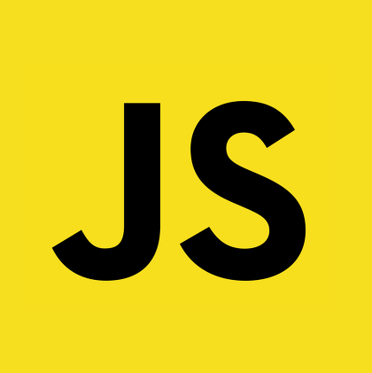
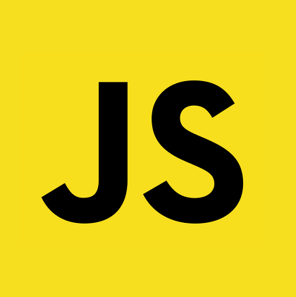

About me.
Skills.

 


My Goal.
My SNS.
Hong Yong-Geun [Alex]
# 86.11.24
# 경영
# INTP
# 경남 창원
안녕하세요! IT 업계에서 경력을 쌓고 싶은 열정이 넘치는 사람입니다. 정보 기술 분야에서는
문제 해결에 대한 열정과 창의적인 사고가 중요하다고 믿습니다.
소프트웨어 개발, 네트워크 보안, 데이터 분석 등 다양한 영역에서 학습을 해오고 있고, 새로운 기술에 대한
호기심과 탐구 정신을 진니고 있습니다.
항상 새로운 기술과 트렌드를 습득하고 적용하는 것을 즐깁니다
업무 외에는 음악 감상과 스포츠를 즐기며, 새로운 기술에 대한 호기심과 탐구 정신을 지니고 있습니다.
함께 일하면서 동료들과의 협업을 통해 더 나은 결과물을 만들어내는 것을 즐기며, 항상 도전을 두려워하지
않는 자세로 업무에 임합니다.
함께 일할 기회가 있다면 더 많은 것을 배우고 성장할 수 있는 기회라고 생각합니다.
Team Style
제 협업 스타일은 "통합적 협업"입니다.
여러 분야의 역할과 기능을 통합하여 팀원 간의 협력을 도모하는 방식으로 작업합니다. 다양한 전문성과 관점을 통합하여 창의적이고 효율적인 결과를 이끌어냅니다.
이런 통합적으로 하는 방식에서는 팀원 간의 의견을 존중하고 다양성을 즐기는 부분이 중요하며, 효율적읜 의사소통 과정이 필요합니다.
또한, 필요한 경우 중재자 역할을 하여 갈등을 조정하고 의사소통을 원활하게 합니다. 팀의 목표를 위해 효율적으로 일하는 것이 제 가치관이며,
팀원들이 함께 성장하고 발전할 수 있는 환경을 조성하는 것이 저의 목표입니다.
나의 목표는 "필수적인 사람"을 가지고 싶다. IT업계에서 일하면서 가장 중요한 것은
자신의 실력이다. 실력을 갖추기 위한 첫번째는 기술적인 역량 향상이 필요하다. 어떤 개발에 필요한 다양한 언어, 프레임워크, 플랫폼 등을
익히고 다양한 프로젝트에 대응할 수 있는 능력을 갖추고 싶다.
두번째는 문제해결 능력이다. 코딩이라는 건 오류가 발생할 수 밖에 없기 때문에 그것에 대한 해결 방안이 요구된다. 다양한 코딩 문제들을 접해보면서
이런 부분에 대한 역량을 키워나가고 싶다. 세번째는 커뮤니케이션 능력이다. 개발은 혼자가 아니라 다양한 사람들이 함께 하나된 결과물을 만드는
과정이기 때문에 팀원과의 원할한 소통이 필수적이다. 이 세 가지에 대해서 충분한 능력을 갖춰서 하나의 IT 개발자로 인정받는 사람이 되고 싶다.